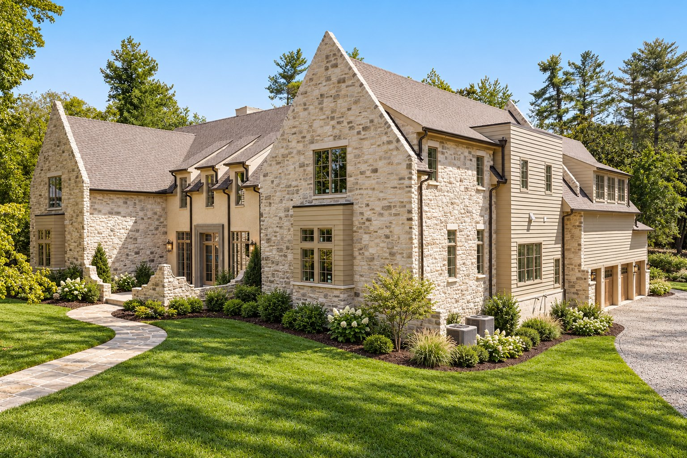
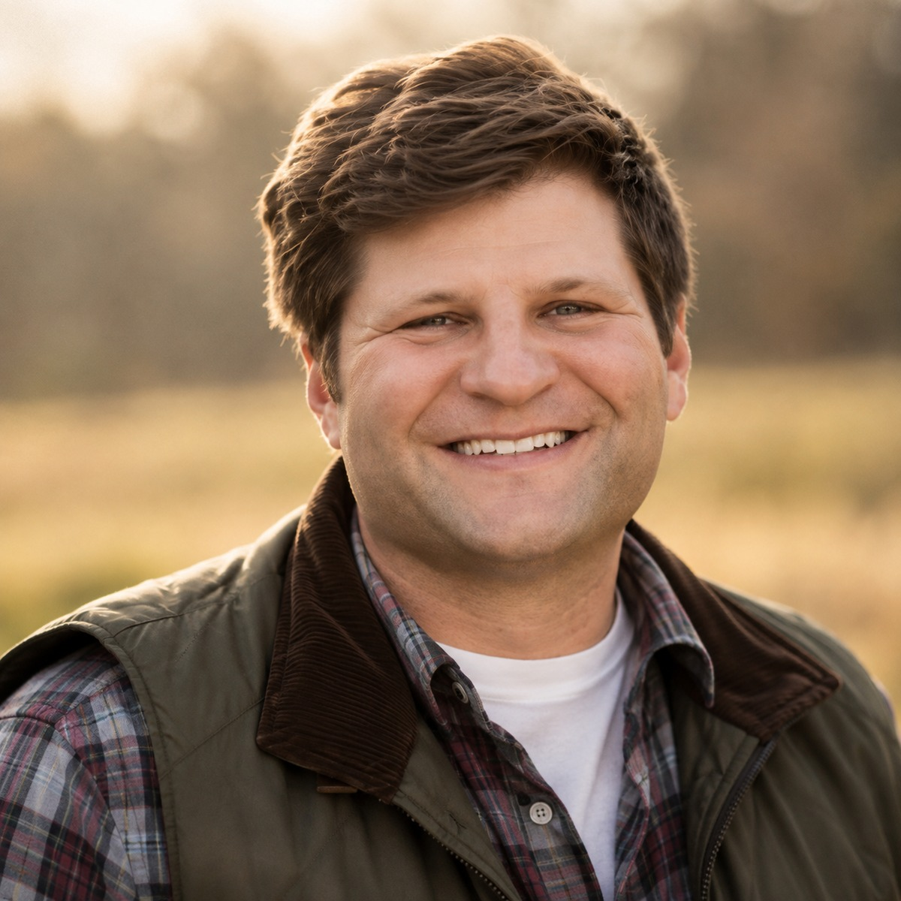

Active
1211 Carl Seyfert Memorial Dr
1211 Carl Seyfert Memorial Dr
Brentwood, TN 37027
$5,765,000·7,885 Sq Ft·6 Bed·6 Bath
Request Information
$5,765,000·7,885 Sq Ft·6 Bed·6 Bath
Request InformationA 1.28-acre site at the end of a dead-end street in Forest Hills, off Granny White. The exterior is hand-laid stone and slurry-washed masonry beneath a steeply pitched roof. Completion is set for mid-November.
Inside: white oak ceiling detail, stone in the foyer, oversized steel-look windows. Six bedrooms and six full baths, with the primary suite and a second bedroom both on the main level. A main-floor office, an upstairs gym, and three laundry rooms — one of them inside the primary.
The kitchen conceals a second, full kitchen behind cabinetry: a working back-of-house that keeps the main room clear.
Outside, a pool and spa with an optional retractable cover, an outdoor kitchen, a covered living area with overhead heaters, and a pool bath, set in lavender-lined hardscape. Four-car garage. Whole-home audio is already in the living room, the primary suite and the outdoor area.
1.28 Acres·6 Bed·6 Full, 3 Half·7,885 Sq Ft
$5,765,000·Built 2026·Two Stories·MLS 3259707
Developer
Blake Barker
Blake is deeply rooted in family values and believes every family deserves a safe, stable home where they can thrive — free from the fear of homelessness.
In 2020, he began a mission to develop starter homes for families in need, sparking a passion for real estate that led him to Nashville, Tennessee, where he has helped individuals find both homes and long-term investments. A 2022 graduate of Western Kentucky University, Blake brings a strong background in leadership, sales, entrepreneurship, and teamwork.
In 2025, Blake earned his Master’s in Real Estate Development from Auburn University, further equipping him to navigate complex projects and better serve his clients. As a co-founder of Eden Grove and the founder of Shepherd Group, he set out to build a fully integrated real estate business rooted in purpose — one that serves people, fosters community, and creates lasting value through thoughtful development and service.
Blake is a devoted family man, happily married to his wife Abbey. Outside of work, you’ll likely find him on the water, enjoying time with friends and family. He remains committed to being a knowledgeable and reliable guide for anyone navigating the real estate markets of Greater Nashville and South Central Kentucky.
Builder
Chase Pasternak
Chase Pasternak is a Texas native, born and raised in Paris, with a strong foundation in faith, family, and service. A proud graduate of Ole Miss, Chase began his professional journey as a real estate agent before transitioning into the building industry, where he spent four years gaining hands-on experience in construction and development.
Now combining both worlds, Chase brings a unique perspective to real estate — blending sales expertise with deep construction knowledge to help clients make smart, informed decisions. He’s driven by a passion for people and a commitment to excellence in everything he does.
Chase is happily married to his wife, Halle, and they share life with their two German Shepherds, Emma and Ethel. Outside of work, he’s big into fitness, golf, and travel. He also serves as a dedicated volunteer with Team Zeal at Zeal Church, where his faith and community values continue to guide his life and career.

Architect
Andrew King
Andrew King is a Nashville-based luxury home architect with more than fifteen years of practice in high-end custom residential design.
His work — featured in Architectural Digest — is recognized for the unhurried, site-responsive sensibility that distinguishes true estate architecture from production luxury: rooms scaled to how owners actually live, façades calibrated to neighborhood character, and a design discipline that earns its budget at every stage.
Interior Designer
Amber Pyles
We take a custom concept and bring it to life, creating a seamless experience so you can simply step into a home that feels finished, intentional, and ready to live in.
I spend most of my days designing spaces, sourcing, and project managing. I have a love for European antiques, unique architectural details, and natural materials. I want our homes to feel collected rather than overly designed.
Forest Hills is one of the satellite cities that kept its own government after Nashville and Davidson County consolidated in 1963 — roughly nine square miles of steep wooded hills between Belle Meade, Green Hills and the Williamson County line. It is almost entirely residential; no commercial development is permitted, and houses sit well back on one- to two-acre lots rather than in subdivisions. Radnor Lake and the Warner Parks are both minutes away, and Green Hills is five to ten.
Blake Barker